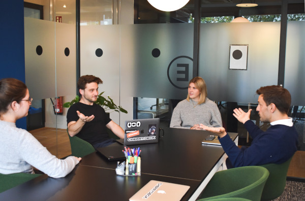

Cas d'utilisation
La valeur rencontre l'abordabilité sans compromis
Industrie du service
Offrir divers services à plusieurs clients? Rattrapez tout et tout le monde sur une seule et même plateforme !
Avec CatchUp, vous pouvez :plan
gérer
collaborer
tous vos projets avec vos équipes ainsi que vos clients depuis n'importe quel appareil et n'importe où.
Tout le monde reste sur la même page !
Plus de lacunes, plus de malentendus... Jamais !
Cette plate-forme facile à utiliser mais puissante permet de tout organiser, afin que vous puissiez vous concentrer sur le vrai travail !

Entreprises informatiques
Battez vos concurrents en élaborant des stratégies et en gérant vos projets et vos équipes tout en offrant de la qualité à vos clients grâce à cette solution collaborative !
Puissant, abordable, facile à utiliser et sécurisé - CatchUp vous aide à :Gestion de projet et planification des tâches
Collaboration et communication en temps réel
Structure des tâches et des éléments d'action alignée sur l'entreprise
Avancement et suivi des projets et des tâches
Facturation et facturation intégrées
Accessible depuis tous vos appareils, CatchUp est au service de toutes les organisations travaillant dans n'importe quel environnement - hybride/distant/colocation, faisant passer la productivité et l'efficacité au niveau supérieur !
Agences numériques
Projets complexes, industries variées, clients multiples ?
CatchUp à votre secours !
CatchUp guide votre organisation hors du chaos inorganisé vers une solution claire, simple et facile à utiliser mais puissante et efficace qui accélère la productivité à un prix abordable.
Gérer plusieurs projets et équipes
Travailler avec plusieurs clients
Collaborer pour travailler vers des objectifs communs
Suivre les projets et la facturation
- 
Entreprises de commercialisation
Besoins changeants et évolutifs du marché ou client exigeant ?
Aucun problème! Une solution, à votre façon !
CatchUp fournit une solution robuste et efficace pour tous vos besoins de gestion de projets complexes afin que vous puissiez vous concentrer sur ce que vous faites de mieux : le marketing !
Planifiez et gérez vos projets, campagnes et équipes
Collaborer pour faire émerger et délivrer les meilleures idées
Suivre les campagnes
tous vos projets avec vos équipes ainsi que vos clients depuis n'importe quel appareil et n'importe où.
Tout le monde reste sur la même page !
Plus de lacunes, plus de malentendus... Jamais !
Cette plate-forme facile à utiliser mais puissante permet de tout organiser, afin que vous puissiez vous concentrer sur le vrai travail !

Cabinets d'avocats
Affaires juridiques compliquées, délais variables, nombreux dossiers et documents juridiques, plusieurs clients - organisez tout pour que vous puissiez vous concentrer sur votre expertise juridique !
Avec CatchUp vous pouvez :Planifiez, organisez et gérez vos dossiers et portefeuilles
Collaborer pour travailler en équipe et organiser vos dossiers d'affaires juridiques
Créer des modèles de cas
Maximisez vos efforts dans la résolution des cas plutôt que dans leur gestion, laissez CatchUp s'en occuper !